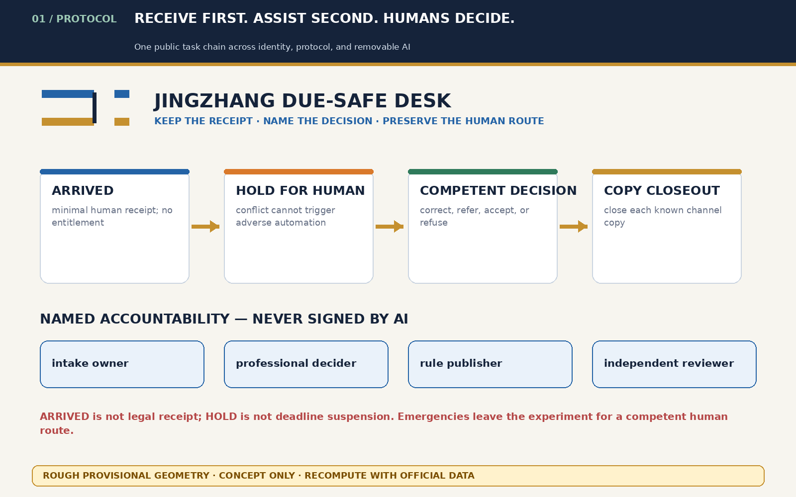
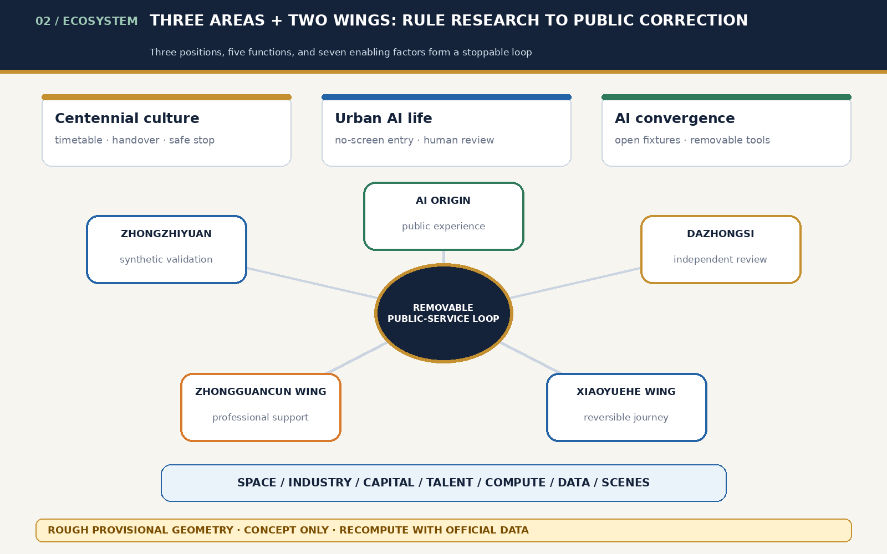
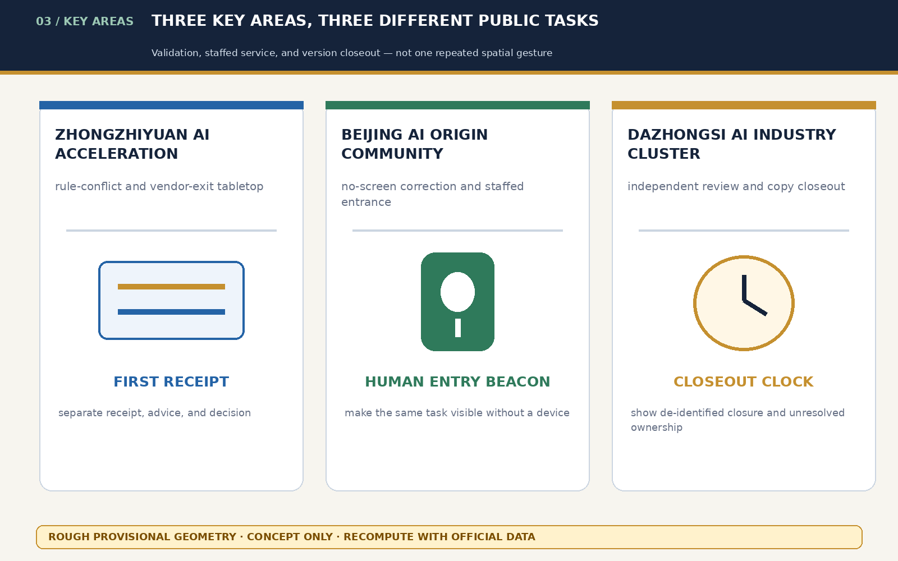
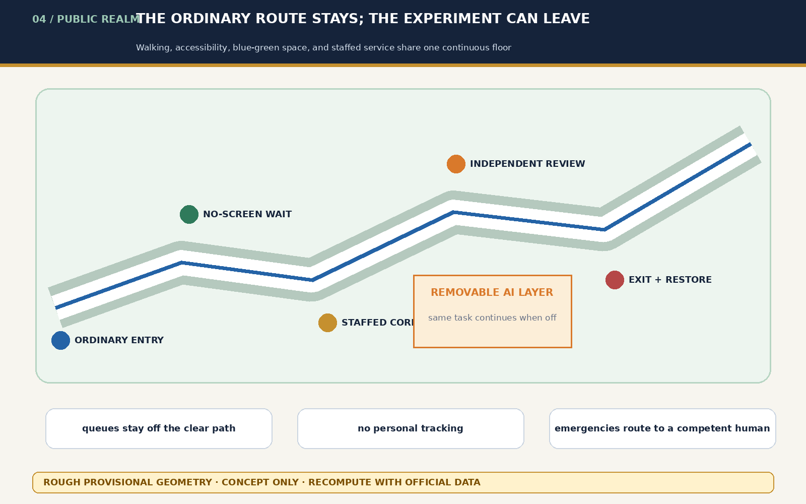
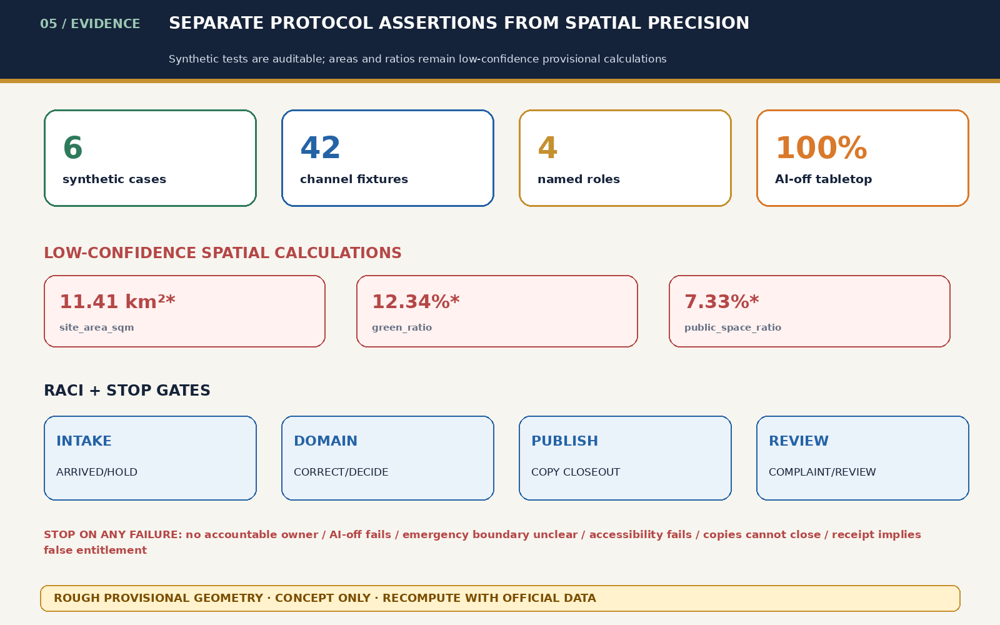

Provisional boundary and precision
All areas and ratios come from rough provisional polygons and conceptual layers with low confidence; they are not official areas, planning controls, or implementation bases.
Overview map

Three-level scope · land-use structure · buildings and renewal

Key areas · three conceptual landmarks

Walking, accessibility, and blue-green public space

Core metrics · self-check status

AI scenes · task coverage
- Minimal receipt
- Rule conflict
- No-screen correction
- Queue preservation
- Independent review
- Copy closeout
- Dispute envelope
- Service exit
- Multilingual gap card
- Failure annual
- Same entrance
- Deadline queue
Substantive agent.1–agent.6 deliverables are in taskbook-deliverables.json; synthetic states, RACI, emergency exception, privacy, retention, complaint, and exit gates are in protocol-audit.json.
Core metrics · self-check status
Self-check state: deterministic, SPATIAL_REVIEW, VISUAL_PACKAGING, and PROFESSIONAL_EVIDENCE must all PASS; three provisional notices remain expected precision warnings.
Sources and assumptions
Sources: sources.json, the source registry, standards snapshots, and three original audit ledgers. Assumptions: official geometry, redlines, ownership, fire, utilities, heritage, real procedures, and affected-user testing remain missing.
sources.json · assumptions.json · taskbook-deliverables.json · protocol-audit.json · rights-ledger.json